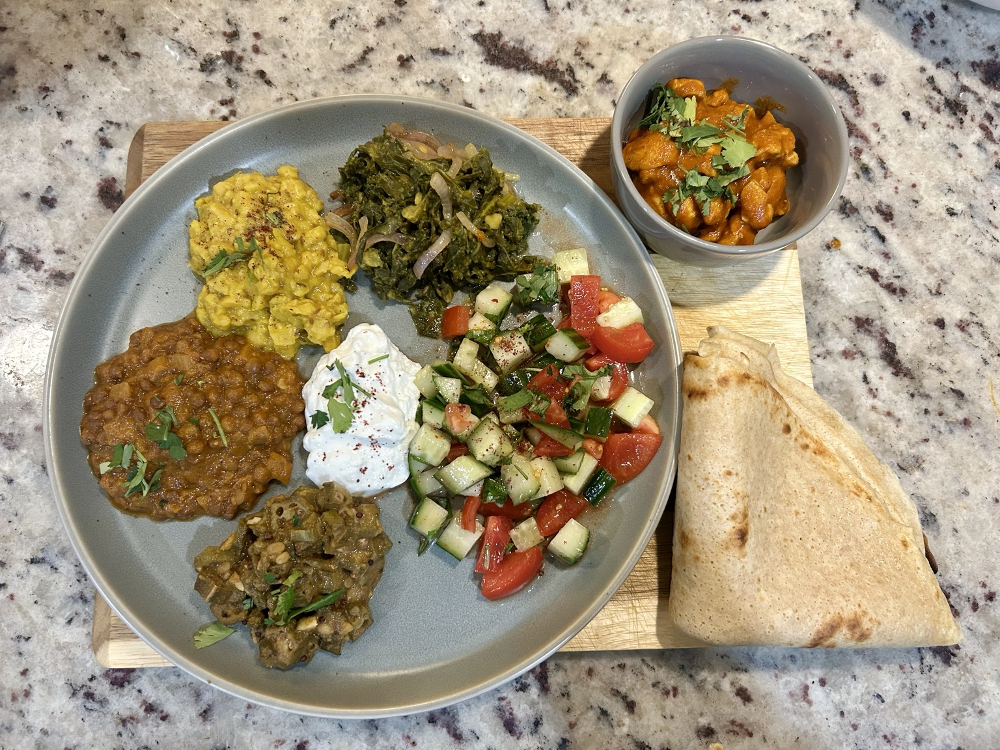

Main
An Ethiopian-Inspired Feast
Rather than one elaborate dish, a whole table of small things: fiery chicken, mellow kik alicha–inspired chickpeas, warmly spiced lentils, soft kale and tender okra, timatim salata, cooling yoghurt and something tangy to scoop it all up. Each component is simple. The pleasure is in their contrasts.

The idea
A table of contrasts rather than a single elaborate recipe. This is Ethiopian-inspired home cooking, not a claim to reproduce a traditional Ethiopian feast exactly. The chicken marinade and Instant Pot sauce, and the gomen preparation, follow my cooking notes; some of the smaller dishes use suggested working proportions where I did not record precise measurements.
Doro wat — marinated chicken in berbere-cardamom sauce
Marinating the chicken first is the key. A little oil carries the berbere, ginger, garlic and lemon; there is no reason to dilute the marinade with water. Cardamom deserves a prominent place here: its distinctive fragrance speaks up beautifully against the slowly cooked onion and tomato. I prepare the sauce in the Instant Pot, blend it smooth with an immersion blender, and only then add the chicken.
- About 1 1/2 lb (680 g) chicken breast, cut into strips
- 1 tbsp lemon juice
- 1 tsp extra-virgin olive oil, for the marinade
- 2 tsp grated garlic
- 2 tsp grated ginger
- 2 tsp berbere (or less if particularly hot)
- 1/2 tsp ground cardamom
- About 2/3 tsp fine salt, or to taste
- 1 large onion, finely chopped
- 1 tsp extra-virgin olive oil, for the sauce
- 1 small can (8 oz) plain tomato sauce
- Stock or water, only as needed to cook the sauce
- 1 tsp honey, to finish
- Optional: 1–2 tsp butter, for a richer finish or serving
- Toss the chicken with lemon juice, olive oil, garlic, ginger, berbere, cardamom and salt. Cover and refrigerate for 30–60 minutes.
- On Sauté in the Instant Pot, slowly brown the onion in the olive oil, stirring until it softens and develops colour. Add the tomato sauce, scraping up any browned bits, and adjust with a little stock or water only if necessary.
- Pressure-cook the onion-tomato sauce until the onion is completely tender. Allow the pressure to release safely, then use an immersion blender to make the sauce smooth and cohesive. Reduce briefly on Sauté if it is too thin.
- Only now add the marinated chicken and its marinade to the blended sauce. Simmer on Sauté, stirring gently, until the chicken is cooked through and reaches 165°F internally. Avoid prolonged cooking of the breast.
- Stir in the honey and taste for salt and cardamom. For an optional touch of traditional richness, melt a little butter into the hot sauce just before serving, or finish each portion with a small pat of butter. Serve while hot.
Gomen — slow-cooked kale
A modest amount of besan is my personal addition: it catches the cooking liquid and gives the greens a pleasantly cohesive texture.
- About 5 oz (150 g) fresh kale, chopped
- 1 small onion, thinly sliced
- 1 tsp olive oil
- 1 tsp besan (chickpea flour)
- Garlic and ginger, optional
- Water, salt and a little lemon juice, as needed
- Soften the onion slowly in the oil, adding a little water rather than more fat if necessary.
- Add the kale and a splash of water. Cover and cook until tender, stirring occasionally.
- Stir in the besan and simmer for several minutes, until the flour has cooked through and the remaining liquid thickens slightly. Season to taste.
Misir wat–style lentils
Suggested proportions for the earthy, warmly spiced lentil component; this side was not recorded as a complete weighed batch.
- 1/2 cup dry red lentils (or about 1 1/2 cups cooked lentils)
- 1/2 small onion, chopped
- 1 garlic clove
- 1 tsp grated ginger
- 1–2 tsp berbere
- 1 tsp tomato paste
- 1 tsp oil, salt and water
- Soften the onion in oil; add garlic, ginger, berbere and tomato paste and cook until fragrant.
- Add lentils and enough water to cover generously. Simmer until tender and thick, adding water as needed. Adjust salt and heat.
Kik alicha–inspired golden chickpeas
Kik alicha is traditionally a mild turmeric-yellow split-pea stew. My chickpea variation deliberately has a spectrum of textures: some chickpeas almost creamy, others in coarse pieces, and a few still whole. A few pulses in the food processor make this easy.
- 1 1/2 cups cooked chickpeas
- 1/2 small onion, finely chopped
- 1 garlic clove
- 1 tsp grated ginger
- 1/2 tsp turmeric
- 1 tsp besan (chickpea flour)
- 1 tsp olive oil
- A pinch of cumin or cardamom, optional
- Salt and water, as needed
- Pulse the chickpeas a few times in a food processor, just enough to leave a mixture of whole, roughly broken and finely crushed chickpeas. Do not purée.
- Start by frying the onion in the olive oil with the besan, stirring until the onion softens and the flour loses its raw taste.
- Add the garlic, ginger and turmeric, followed by the pulsed chickpeas and a little water.
- Simmer gently until the textures come together in a thick, spoonable mixture. Season lightly, keeping it mellow alongside the hotter doro wat.
For a smoother, more delicate legume accompaniment, my Greek Φάβα (split-pea purée) is a lovely alternative. It is a different dish, of course, but works beautifully in the same place on the platter.
Bamia-style okra
A tender, tomato-based okra side. These are suggested working proportions.
- 200 g okra, fresh or frozen
- 1 small tomato, chopped
- 1/2 small onion, chopped
- 1 garlic clove
- 1 tsp olive oil
- Pinch of cumin or berbere, salt and water
- Soften onion in the oil, then add garlic and tomato and cook until the tomato begins to break down.
- Add okra, seasoning and a splash of water. Cover and simmer until just tender, stirring gently to preserve its shape.
Timatim salata — Ethiopian tomato salad
Timatim salata is an Ethiopian tomato salad, often made with onion and a sharp dressing. My version adds cucumber and fresh herbs for extra crunch. Toss everything together just before serving.
- 1 Roma tomato, diced
- 1/2 cucumber, diced
- 2 tbsp finely chopped onion
- Fresh coriander or parsley
- Lemon juice, salt, black pepper and optional sumac
Soft ragi–besan–kefir flatbreads
My quick injera-inspired alternative, not traditional fermented teff injera. Ragi supplies earthy flavour, besan gives body and kefir brings a pleasant tang.
- 1/2 cup ragi flour
- 1/2 cup besan
- 1 cup plain low-fat kefir
- 1/4–1/2 cup water
- 1/2 tsp salt
- 1/4 tsp baking soda
- Whisk the flours, kefir, salt and enough water into a pourable batter. Rest for 30–60 minutes (or refrigerate overnight).
- Just before cooking, stir in the baking soda. Adjust the water if the batter has thickened.
- Pour about 1/4 cup batter into a hot nonstick pan and spread into a thin 7–8-inch round. Cover and cook on one side for 2–4 minutes until set and softly porous. Repeat, keeping the flatbreads covered so they stay pliable.
Plain yoghurt — a cooling accompaniment
A generous spoonful of thick plain yoghurt sits at the centre of my platter, cooling the berbere and bringing a pleasant tang to the lentils and vegetables. Ethiopia has its own fermented milk tradition, including ergo, a naturally soured, yoghurt-like milk. Here I simply use Greek yoghurt rather than claiming to reproduce traditional ergo.
- 2–3 tbsp thick plain Greek yoghurt per plate
- A little sumac and fresh coriander, optional
Spoon the yoghurt onto the plate just before serving and, if desired, finish with a little sumac and coriander. Keep it unsweetened and simply seasoned.
Putting the feast together
I like to arrange the vegetables and lentils as separate small portions, with the yoghurt in the middle, fresh salad alongside, and the chicken in its own bowl. The flatbreads go on the side, ready to tear and scoop. Serve a little of each dish, with the chicken in its own bowl and warm flatbreads alongside. The balance of flavours matters most.
Notes
The pleasure of this meal is its modularity: the spicy and mellow, slow-cooked and fresh, thick and juicy, all on one plate. Many of the sides are even better made ahead, while the salad and flatbreads deserve attention at the end. Doro tibs — quickly browned chicken with onion, pepper, tomato, berbere and rosemary — would be another good chicken option, but the separate bowl in this photograph is doro wat.